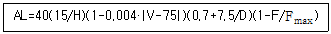
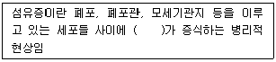
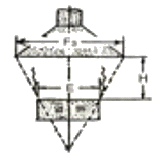
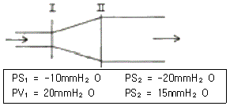
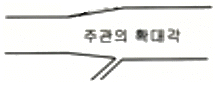
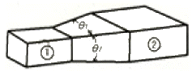

산업위생관리산업기사 (2007-08-05 기출문제)
1과목: 산업위생학 개론
1. 다음 중 직업성 경견완 증후군 발생과 연관되는 작업으로 가장 거리가 먼 것은?
- 전화교환작업
- 전기톱에 의한 벌목작업
- 키펀치작업
- 금전등록기의 계산작업
(정답률: 82%)

2. 근무 교대제를 운영함에 있어서 고려되어야 할 사항으로 가장 적절한 것은?
- 야간근무의 연속은 4~5일로 한다.
- 일반적으로 오전 근무의 개시시간은 오전 11시로 한다.
- 야간근무 종료 후 다음 야간근무 시작할 때까지의 간격은 8시간으로 한다.
- 3교대제일 경우 최저 4개조로 편성한다.
(정답률: 94%)
3. 다음 중 외부환경의 변화에 신체반응의 항상성이 작용하는 현상을 무엇이라 하는가?
- 신체의 변성현상
- 신체의 순응현상
- 신체의 회복현상
- 신체의 이상현상
(정답률: 75%)
4. 평균 근로자가 850명인 사업장에서 연간 100건의 업무재해가 발생하였다. 1일 9시간 연 300일을 작업하고 연간 작업손실기간이 40000시간이었다면 이 사업장의 도수율은 약 얼마인가?
- 35.46
- 37.25
- 43.57
- 44.35
(정답률: 23%)
5. 다음 중 산업피로의 증상으로 볼 수 없는 것은?
- 일반적으로 체온이 높아지나 피로정도가 심해지면 도리어 낮아진다.
- 호흡이 빨라지고 혈액중 이산화탄소량이 증가한다.
- 혈당치가 높아지고 젖산, 탄산이 증가한다.
- 혈압은 초기에는 높아지나 피로가 진행되면 도리어 낮아진다.
(정답률: 65%)
6. 다음 중 산업위생분야에 관련된 단체와 그 약자를 잘못 연결한 것은?
- 미국 국립산업안전보건연구원 - NIOSH
- 미국 산업위생학회 - ACGIH
- 미국 직업안전위생관리국 - OSHA
- 영국 산업위생학회 - BOHS
(정답률: 44%)
7. 1775년 영국의 외과의사인 Percivall Pott에 의해 최초로 보고된 “음낭암”의 원인물질은?
- 벤젠
- 검댕
- 면
- 납
(정답률: 90%)
8. 노동에 필요한 에너지원은 근육에 저장된 화학적에너지와 대사과정을 거쳐 생성되는 에너지로 구분된다. 근육운동의 에너지원이 대사에 주로 동원되는 순서(시간대별)를 가장 바르게 나타낸 것은? (단, 혐기성 대사이다.)
- Glycogen → CP → ATP
- CP → Glycogen → ATP
- ATP → CP → Glycogen
- CP → ATP → Glycogen
(정답률: 55%)
9. 노출기준의 종류 중 근로자가 1회에 15분간 유해요인에 노출되는 경우에 적용하는 것으로 이 농도 이하에서는 1회 노출간격이 1시간 이상인 경우 작업시간 동안 4회까지 노출이 허용될 수 있는 농도를 무엇이라 하는가?
- TLV-C
- TLV-STEL
- TLV-TWA
- Excursion Limits
(정답률: 50%)
10. 구리(Cu) 독성에 관한 인체 실험 결과 안전흡수량이 체중 kg당 0.1mg 이었다. 1일 8시간 작업시 구리의 체내흡수를 안전흡수량 이하로 유지하려면 공기 중 구리농도는 약 얼마이하여야 하는가? (단, 성인근로자 평균체중은 75kg, 작업시 폐환기율은 1.2m3/h, 체내 잔류율은 1.0 이다.)
- 0.61mg/m3
- 0.73mg/m3
- 0.78mg/m3
- 0.85mg/m3
(정답률: 46%)
11. 다음 중 산업피로의 발생기전이라고 할 수 없는 것은?
- 중간 대사물질의 축적
- 신체조절기능의 저하
- 신체내 포도당의 증가
- 산소, 영양소 등 에너지원의 소모
(정답률: 86%)
12. 일반적으로 심박수(heart rate, beate/min)가 어떠한 상태일 때 심한 전신피로의 상태로 평가하는가?
- HR30-60 이 90을 초과하고, HR150-180 과 HR60-90 의 차이가 20 미만
- HR30-60 이 90을 초과하고, HR150-180 과 HR60-90 의 차이가 10 미만
- HR30-60 이 110을 초과하고, HR150-180 과 HR60-90 의 차이가 20 미만
- HR30-60 이 110을 초과하고, HR150-180 과 HR60-90 의 차이가 10 미만
(정답률: 54%)
13. 다음 중 허용농도(TLV) 적용상의 주의사항으로 틀린 것은?
- 독성의 강도를 비교할 수 있는 지표이다.
- 대기오염 평가 및 관리에 적용할 수 없다.
- 기존의 질병이나 육체적 조건을 판단하기 위한 척도로 사용될 수 없다.
- 안전농도와 위험농도를 구분하는 경계기준이 아니다.
(정답률: 67%)
14. 국소피로를 평가하는 데는 근전도(EMG)를 많이 이용한다. 피로한 근육에서 측정된 EMG에서 나타나는 특징이 아닌 것은?
- 저주파수(0 ~ 40Hz) 힘의 증가
- 고주파수(40 ~ 200Hz) 힘의 감소
- 평균주파수의 감소
- 총전압의 감소
(정답률: 94%)
15. 작업자가 유해물질에 어느 정도 노출되었는지를 파악하는 지표로서 작업자의 생체시료에서 대사산물 등을 측정하여 유해물질의 노출량을 추정하는데 사용되는 것은?
- BEI
- TLV-TWA
- TLV-S
- Excursion limit
(정답률: 73%)
16. 근로자로부터 60cm 떨어진 10kg 의 물체를 바닥으로부터 80cm 들어올리는 작업을 1분에 4씩 1일 8시간 동안하고 있다. AL과 MPL은 약 얼마인가? (단, 다음의 식을 참고하며, Fmax 는 12 이다.)

- AL = 1.9kg, MPL = 5.7kg
- AL = 2.9kg, MPL = 8.7kg
- AL = 3.7kg, MPL = 11.1kg
- AL = 4.7kg, MPL = 14.1kg
(정답률: 58%)
17. 작업대사량이 4000kcal 이고, 기초대사량이 1500kcal인 작업자가 계속하여 작업할 수 있는 계속작업 한계시간(CWT)은 약 얼마인가? (단, log(CWT) = 3.724-3.25log(RMR)를 적용한다.)
- 118분
- 168분
- 218분
- 268분
(정답률: 57%)
18. 생물학적 모니터링에 이용되는 호기에 대한 시료채취·보관, 분석시 고려사항으로 틀린 것은?
- 노출 전과 노출 후에 시료채취
- 수증기에 의한 수분 응축의 양향
- 실측 산소 농도로 보정
- 반감기가 짧으므로 노출 직후 채취
(정답률: 46%)
19. 산업피로를 예방하기 위한 개선대책으로 적당하지 않은 것은?
- 과중한 육체적 노동은 기계화하여 육체적 부담을 줄이고, 너무 정적인 작업은 적정한 동적인 작업으로 전환한다.
- 작업속도를 빨리하여 되도록 작업시간을 단축시킨다.
- 적절한 작업시간과 적절한 간격으로 휴식시간을 두어야 한다.
- 충분한 수면은 피로예방과 회복에 효과적이다.
(정답률: 81%)
20. 다음 중 직업성 질환의 발생원인으로 볼 수 없는 것은?
- 격렬한 근육운동
- 화학물질의 사용
- 국소적 난방
- 단순 반복작업
(정답률: 78%)
2과목: 작업환경측정 및 평가
21. 공기 중의 석면 시료분석 방법 중 가장 정확한 방법으로 석면의 감별분석이 가능하며 위상차 현미경으로 볼 수 없는 매우 가는 섬유도 관찰이 가능하나 값이 비싸고 분석시간이 많이 소요되는 석명측정방법은?
- 편광현미경법
- X선 회절법
- 직독식법
- 전자현미경법
(정답률: 77%)
22. 1000ppm을 %로 환산할 때 다음 어느 것과 같은가?
- 1.0%
- 0.1%
- 0.01%
- 0.001%
(정답률: 77%)
23. 흡광광도법에서 사용되는 흡수셀의 재질중 근적외부 파장범위에서 사용되는 흡수셀의 재질로 알맞은 것은?
- 석영제
- 플라스틱제
- 펄프제
- 도자기제
(정답률: 34%)
24. 음력이 1.0W 인 작은 점음원으로부터 50m 떨어진 곳의 음압 레벨(SPL : dB)은? (단, SPL = PWL-20logr - 11)
- 약 60
- 약 65
- 약 70
- 약 75
(정답률: 48%)
25. 투과 퍼센트가 50%인 경우 흡광도는?
- 0.65
- 0.52
- 0.43
- 0.30
(정답률: 82%)
26. 어떤 유해작업장에 일산화탄소(CO)가 0℃, 1기압 상태에서 10ppm 이라면 이 공기 1Sm3 중에 CO는 몇mg 포함되어 있는가?
- 10.8mg
- 12.5mg
- 15.3mg
- 18.6mg
(정답률: 48%)
27. 검지관 방식으로 가스상 물질을 측정할 수 있는 경우와 가장 거리가 먼 것은?
- 예비조사 목적인 경우
- 검지관방식 외에 다른 측정방법이 없는 경우
- 발생하는 가스상 물질이 복합물질인 경우 (다만, 보건관리자가 측정하는 사업장에 한한다.)
- 발생하는 가스상 물질이 단일물질인 경우 (다만, 작업환경측정의 자격을 가진자가 측정하는 사업장에 한다.)
(정답률: 53%)
28. 작업장 소음 측정시간 및 횟수기준에 관한 설명으로 가장 올바른 것은? (단, 단서조항 제외)
- 단위작업장소에서 소음수준은 규정된 측정위치 및 지점에서 1일 작업시간동안 2시간이상 연속측정하거나 작업시간을 1시간 간격으로 나누어 2회 이상 측정하여야 한다.
- 단위작업장소에서 소음수준은 규정된 측정위치 및 지점에서 1일 작업시간동안 4시간이상 연속측정하거나 작업시간을 1시간 간격으로 나누어 4회 이상 측정하여야 한다.
- 단위작업장소에서 소음수준은 규정된 측정위치 및 지점에서 1일 작업시간동안 6시간이상 연속측정하거나 작업시간을 1시간 간격으로 나누어 6회 이상 측정하여야 한다.
- 단위작업장소에서 소음수준은 규정된 측정위치 및 지점에서 1일 작업시간동안 8시간이상 연속측정하거나 작업시간을 1시간 간격으로 나누어 8회 이상 측정하여야 한다.
(정답률: 48%)
29. 2차 표준기구와 가장 거리가 먼 것은?
- 오리피스 미터
- 유리 피스톤 미터
- 습식테스트 미터
- 열선기류계
(정답률: 60%)
30. 다음 중 실리카겔에 대한 친화력이 가장 큰 물질은?
- 알코올류
- 에스테르류
- 파라핀류
- 올레핀류
(정답률: 53%)
31. 작업장에 98 dB의 소음을 발생시키는 기계 한 대가 있다. 여기에 98 dB의 소음을 발생한 다른 기계 한 대를 더할 경우 소음 수준은? (단, 기타 조건은 같다고 가정함)
- 99 dB
- 101 dB
- 103 dB
- 1⑤ dB
(정답률: 76%)
32. 다음 내용은 흡착제로 공기중 증기를 채취할 때 파과현상에 대한 설명이다. 이중 옳지 않은 것은?
- 시료채취유량이 높으면 파과가 일어나기 쉽다.
- 고온일수록 흡착성질이 증가하여 파과가 일어나기 어렵다.
- 극성흡착제를 사용할 경우 습도가 높을수록 파과가 일어나기 쉽다.
- 공기중 오염물질의 농도가 높을수록 파과공기량은 감소한다.
(정답률: 24%)
33. 실리카겔관을 흡착튜브로 시료를 채취하는데 가장 알맞은 유기용제는?
- 니트로벤젠류
- 할로겐화 탄화수소류
- 방향족 탄화수소류
- 파라핀류
(정답률: 64%)
34. 가스상 물질을 검지관방식으로 측정하는 경우, 측정횟수 기준으로 맞는 것은? (단, 가스상 물질 발생시간은 6시간 이상임)
- 1일 작업시간 동안 1시간 간격으로 6회 이상 측정하되 매 측정시간마다 2회 이상 반복 측정하여 평균값을 산출한다.
- 1일 작업시간 동안 2시간 간격으로 3회 이상 측정하되 매 측정시간마다 2회 이상 반복 측정하여 평균값을 산출한다.
- 1일 작업시간 동안 1시간 간격으로 6회 이상 측정하되 매 측정시간마다 2회 이상 반복 측정하여 최고값을 산출한다.
- 1일 작업시간 동안 2시간 간격으로 3회 이상 측정하되 매 측정시간마다 2회 이상 반복 측정하여 최고값을 산출한다.
(정답률: 64%)
35. '지역시료채취'의 용어 정의로 가장 옳은 것은? (단, 작업환경측정 및 정도관리규정 기준)
- 시료채취기를 이용하여 가스, 증기, 분진, 흄, 미스트를 근로자의 작업위치에서 호흡기 높이로 이동하며 채취하는 것을 말한다.
- 시료채취기를 이용하여 가스, 증기, 분진, 흄, 미스트를 근로자의 작업행동 범위에서 호흡기 높이로 이동하며 채취하는 것을 말한다.
- 시료채취기를 이용하여 가스, 증기, 분진, 흄, 미스트를 근로자의 작업위치에서 호흡기 높이에 고정하여 채취하는 것을 말한다.
- 시료채취기를 이용하여 가스, 증기, 분진, 흄, 미스트를 근로자의 작업행동 범위에서 호흡기 높이에 고정하여 채취하는 것을 말한다.
(정답률: 40%)
36. 어떤 중금속의 작업환경 중 농도를 측정하고자 공기를 분당 2ℓ씩 5시간 채취하여 분석한 결과 중금속 질량이 12mg 이었다. 이때 공기 중 농도는 몇 mg/m3인가?
- 10
- 20
- 30
- 40
(정답률: 55%)
37. 호흡성 입자채취를 위한 사이클론과 충돌기를 비교한 내용으로 틀린 것은?
- 충돌기에 비하여 사이클론은 시료의 되튐으로 인한 손실 염려가 없다.
- 사이클론의 경우 채취효율을 높이기 위한 매체의 코팅이 필요하다.
- 충돌기에 비하여 사이클론이 호흡성 먼지에 대한 자료를 쉽게 얻을 수 있다.
- 사이클론이 충돌기에 비하여 사용이 간편하고 경제적이다.
(정답률: 47%)
38. 톨루엔(Toluene, MW=92.14) 농도가 50ppm인 사업장에서 채취유량은 0.2ℓ/min으로 가스크로마토그래프의 정량 한계가 0.2mg이다. 채취할 최소시간은? (단, 1기압 25℃ 기준)
- 4.2분
- 5.3분
- 6.1분
- 7.5분
(정답률: 56%)
39. 먼지 시료채취에 사용되는 여과지에 대한 설명이 잘못된 것은?
- PTFE막 여과지는 농약이나 알칼리성 먼지 채취에 적합하다.
- MCE막 여과지는 산에 쉽게 용해된다.
- 은막 여과지는 코크스 제조공정에서 발생되는 코크스 오븐 배출물질 채취에 사용한다.
- PVC막 여과지는 수분에 대한 영향이 크므로 용해성 시료 채취에 사용한다.
(정답률: 59%)
40. 가스상 물질의 시료포집시 사용된 활성탄관의 탈착에 주로 사용하는 탈착용매는? (단, 비극성물질 기준)
- 초산
- 헥산
- 메탄올
- 이황화탄소
(정답률: 72%)
3과목: 작업환경관리
41. 고압환경에서의 인체작용인 2차적인 가압현상(화학적장해)에 관한 설명으로 알맞지 않은 것은?
- 이산화탄소는 산소의 독성과 질소의 마취작용을 증가시킨다.
- 4기압 이상에서 공기 중의 질소가스는 마취작용을 나타내 작업력의 저하, 기분의 변환, 여러 정도의 다행증(euphoria)이 일어난다.
- 산소의 분압이 2기압이 넘으면 산소중독증세가 나타난다.
- 고압환경의 이산화탄소농도는 대기압으로 환산하여 0.02%를 초과해서는 안 된다.
(정답률: 56%)
42. 작업에 기인하여 전신진동을 받을 수 있는 작업자로 가장 올바른 것은?
- 병타 작업자
- 착암 작업자
- 함머 작업자
- 교통기관 승무원
(정답률: 75%)
43. 1촉광의 광원으로부터 한 단위입체각으로 가는 광속의 단위는?
- Lumen
- Lux
- Footcandle
- Lambert
(정답률: 64%)
44. 자외선에 관한 설명으로 틀린 것은?
- 자외선의 살균작용은 254nm 파장 정도에서 가장 강하다.
- 일명 화학선이라고 하며 주로 눈과 피부에 피해를 준다.
- 눈에는 390nm 파장 정도에서 가장 영향이 크다.
- Dorno ray 는 290~315nm 정도의 범위이다.
(정답률: 27%)
45. 전리방사선의 단위로서 피조사체 1g 에 대하여 100erg의 에너지가 인체조직에 흡수되는 양을 나타내는 것은?
- R
- Ci
- rad
- IR
(정답률: 64%)
46. 귀덮개와 비교하여 귀마개에 대한 설명으로 틀린 것은?
- 부피가 작아서 휴대하기가 편리하다.
- 좁은 장소에서 머리를 많이 움직이는 작업을 할 때 사용하기가 편리하다.
- 제대로 착용하는 데 시간이 걸리고 요령을 습득하여야 한다.
- 일반적으로 차음효과가 우수하다.
(정답률: 57%)
47. 다음 중 분진이나 유리섬유로부터 피부를 보호하기 위하여 사용되는 피부 보호제는?
- 수용성 피부 보호제
- 지용성 피부 보호제
- 피막형성형 피부 보호제
- 광과민성 물질에 대한 피부 보호제
(정답률: 76%)
48. 유해성이 적은 재료의 대치에 관한 설명으로 알맞지 않는 것은?
- 유기합성용매로 벤젠을 사용하던 것을 지방족 화합물의 휘발유계 용매로 전환한다.
- 분체의 원료는 입자가 작은 것으로 전환한다.
- 금속제품 도장용으로 유기용제를 사용하던 것을 수용성도료로 전환한다.
- 금속제품의 탈지(脫脂)에 트리클로로에틸렌을 사용하던 것을 계면활성제로 전환한다.
(정답률: 85%)
49. 다음 인체조직 중 전리방사선에 대하여 감수성이 가장 적은 것은?
- 눈의 수정체
- 혈관
- 골수
- 임파선
(정답률: 45%)
50. 깊은 물에서 올라오거나 감압실내에서 감압을 하는 도중에 발생할 수 있는 기포형성에 따라 건강상 문제를 유발할 수 있는 가스의 종류는?
- 수소
- 산소
- 질소
- 이산화탄소
(정답률: 73%)
51. 비교원성진폐증에 관한 설명으로 틀린 것은?
- 페조직이 정상임
- 규폐증, 석면폐증이 대표적임
- 간질반응이 경미함
- 분진에 대한 조직반응은 가역성인 경우가 많음
(정답률: 43%)
52. 사람이 느끼는 최소 진동역치는?
- 55±5 dB
- 65±5 dB
- 75±5 dB
- 85±5 dB
(정답률: 60%)
53. 고온환경에서 육체노동에 종사할 때 일어나기 쉬우며 말초 혈관 확장에 따른 요구 증대만큼의 혈관운동 조절이나 심박 출력의 증대가 없을 때 또는 탈수로 말미암아 혈장량이 감소할 때 발생하는 고열장해는?
- 열경련
- 열피로
- 열사병
- 열성발진
(정답률: 62%)
54. 다음의 진폐증의 대표적인 병리소견인 섬유증에 관한 설명이다. ( )안에 알맞은 내용은?

- 실리카 섬유
- 유리 섬유
- 콜라겐 섬유
- 에멀션 섬유
(정답률: 50%)
55. 다음의 전리방사선 중 상대적 생물학적 효과가 가장 큰 것은?
- X-선
- 베타선
- 감마선
- 중성자
(정답률: 39%)
56. 소음의 특성을 평가하는데 주파수분석이 이용된다. 1/1 옥타브 밴드의 중심주파수가 500Hz일 때 하한과 상한 주파수로 가장 적절한 것은? (단, 정비형 필터 기준)
- 355Hz, 710Hz
- 365Hz, 730Hz
- 375Hz, 750Hz
- 385Hz, 770Hz
(정답률: 46%)
57. 미세한 먼지(0.5㎛ 이하)가 폐포에 침착될 때 가장 크게 작용하는 기전은?
- 충돌
- 정전기 침강
- 확산
- 간섭
(정답률: 36%)
58. 전신진동의 영향이나 장해와 가장 거리가 먼 내용은?
- 산소소비량 증가
- 폐환기 촉진
- 피부 전기저항 저하
- 말초혈관 확대
(정답률: 22%)
59. 파장으로서 방사선의 특성으로 틀린 것은?
- 빛의 속도로 이동한다.
- 직진한다.
- 간섭을 일으키지 않는다.
- 자장이나 전장에 영향을 받지 않는다.
(정답률: 44%)
60. 저온환경에서 발생할 수 있는 건강장해에 관한 설명으로 틀린 것은?
- 전신체온강하는 단시간내 급냉에 따라 일시적으로 발생하는 가영적 급성경증장해이다.
- 제2도 동상은 수포와 함께 광범위한 삼출성염증이 일어나는 경우를 말한다.
- 피로가 극에 달하면 체열의 손실이 급속히 이루어져 전신의 냉각상태가 수반되게 된다.
- 참호족은 지속적인 국소의 산소결핍 때문이며 저온으로 모세혈관 벽이 손상되는 것이다.
(정답률: 43%)
4과목: 산업환기
61. 그림과 같은 레시버식 캐노피형(천개형)에서 후드의 직경(F3)으로 가장 알맞은 식은?

- F3 = E × 1.6H
- F3 = E + 0.8H
- F3 = E × 0.8H
- F3 = E + 1.6H
(정답률: 53%)
62. 다음 중 송풍기에 관한 비례관계로 옳은 것은? (단, Q는 풍량, N는 회전속도, P는 풍압, W는 동력이다)
- Q ∝ N3
- W ∝ N
- P ∝ N2
- Q ∝ N2
(정답률: 71%)
63. 공기정화 장치의 전 ㆍ 후에서 정압감소가 발생하였다면 그 발생 원인으로 가장 관계가 먼 것은?
- 공기 정화장치의 입구주관내에 분진 퇴적
- 송풍기의 능력 저하
- 송풍기 점검 뚜껑의 열림
- 송풍기와 송풍관의 연결부위가 풀림
(정답률: 41%)
64. 그림과 같은 덕트의 I 과 II 단면에서 압력을 측정한 결과 I 단면의 정압(PS1)은 -10mmH2O 였고, I 과 II 단면의 동압은 각각 20mmH2O 와 15mmH2O 였다. II 단면의 정압(PS2)이 -20mmH2O 이었다면 단면 확대부에서의 압력 손실(mmH2O)은 얼마인가?

- 5
- 10
- 15
- 20
(정답률: 47%)
65. 국소배기 장치의 이송덕트 설계에 있어서 분지관이 연결되는 주관 확대각의 범위로 가장 적절한 것은?

- 15˚ 이내
- 30˚ 이내
- 45˚ 이내
- 60˚ 이내
(정답률: 45%)
66. 탱크에서 증발, 탈지와 같이 기류의 이동이 없는 공기 중에서 속도 없이 배출되는 작업조건에서 제어속도의 범위로 가장 적절한 것은? (단, 미국정부산업위생전문가협의회의 권고기준이다.)
- 0.1 ~ 0.15m/s
- 0.15 ~ 0.25m/s
- 0.25 ~ 0.5m/s
- 0.5 ~ 1.0m/s
(정답률: 28%)
67. 송풍관 내에 20℃의 공기가 22m/s 의 속도로 흐를 때 속도압은 약 얼마인가? (단, 0℃ 공기의 밀도는 1.293kg/m3, 기압은 1atm이다.)
- 19.6mmH2O
- 22.4mmH2O
- 24.6mmH2O
- 29.8mmH2O
(정답률: 34%)
68. 온도 50℃ 관내부를 15m3/min 의 기체가 흐르고 있을 때 0℃에서의 유량은 얼마인가? (단, 기압은 760mmHg 로 일정하다.)
- 12.68m3/min
- 14.74m3/min
- 15.⑤m3/min
- 17.29m3/min
(정답률: 31%)
69. 다음 중 희석환기를 사용해서는 안되는 경우에 해당되는 것은?
- 오염물질의 양이 비교적 적고, 희석공기량이 많지 않아도 될 경우
- 오염물질의 허용기준치가 매우 낮은 경우
- 오염물질의 발산이 비교적 균일한 경우
- 가연성가스의 농축으로 폭발의 위험이 있는 경우
(정답률: 35%)
70. 덕트내에서 압력손실이 발생되는 경우가 아닌 것은?
- 낮은 정압
- 덕트 내부면과의 마찰
- 가지 덕트 단면적의 변화
- 곡관이나 관의 확대에 의한 공기의 속도 변화
(정답률: 58%)
71. 다음 중 국소배기장치에 대한 압력측정장비가 아닌 것은?
- U자 마노미터
- 타코미터
- 피토관
- 경사 마노미터
(정답률: 43%)
72. 다음 중 필요환기량을 감소시키기 위한 후드선택 지침이 아닌 것은?
- 가급적이면 공정을 많이 포위한다.
- 포집형 후드는 가급적 배출 오염원 가까이에 설치한다.
- 후드 개구면의 속도는 빠를수록 효율적이다.
- 후드 개구면에서 기류가 균일하게 분포되도록 설계한다.
(정답률: 55%)
73. 다음 중 원심력 집진장치의 장점이 아닌 것은?
- 배출가스로부터 분진 회수 및 분리가 적은 비용으로 가능하다.
- 고온에서 운전이 가능하다.
- 가스상 오염물질 처리가 가능하다.
- 직렬 또는 병렬로 연결하여 사용이 가능하다.
(정답률: 36%)
74. 다음 중 일반적으로 국소배기시설의 배열순서로 옳은 것은?
- 후드 → 덕트 → 공기청정기 → 송풍기 → 배기구
- 후드 → 덕트 → 송풍기 → 공기청정기 → 배기구
- 후드 → 공기청정기 → 덕트 → 배기구 → 송풍기
- 후드 → 송풍기 → 배기구 → 공기청정기 → 덕트
(정답률: 69%)
75. 다음 중 환기시스템에서 덕트의 마찰손실에 대한 설명으로 틀린 것은? (단, Darcy-Weisbach 방정식 기준이다.)
- 마찰손실은 덕트 직경에 반비례한다.
- 마찰손실은 속도 제곱에 반비례한다.
- 마찰손실은 Moody chart에서 구한 마찰계수를 적용하여 구한다.
- 마찰손실은 덕트의 길이에 비례한다.
(정답률: 35%)
76. 일반적으로 국소배기장치의 기본 설계를 위한 다음 과정 중 가장 먼저 실시하여야 하는 것은?
- 제어속도 결정
- 반송속도 결정
- 후드의 크기 결정
- 배관의 배치와 설치장소 결정
(정답률: 50%)
77. 국소배기장치가 효과적인 기능을 발휘하기 위해서는 후드를 통해 배출되는 것과 같은 양의 공기가 외부로부터 보충되어야 한다. 이것을 무엇이라 하는가?
- 메이크럽 에어(make up air)
- 충만실(plenum chamber)
- 테이크 오프(take off)
- 번 아웃(burn out)
(정답률: 50%)
78. 싸이클론의 집진율을 높이는 방법으로 분진박스나 호퍼부에서 처리가스의 일부를 흡인하여 싸이클론내의 난류 현상을 억제시킴으로써 집진된 먼지의 비산을 방지시키는 방법은 어떤 효과를 이용하는 것인가?
- 블로우다운 효과
- 멀티 싸이클론 효과
- 원심력 효과
- 중력침강 효과
(정답률: 75%)
79. 다음 그림과 같이 단면적이 작은 쪽이 ①, 큰 쪽이 ②인 사각형 덕트의 확대관에 대한 압력손실을 구하는 방법으로 가장 적절한 것은? (단, 경사각은 θ1＞ θ2이다.)

- θ1의 각도를 경사각으로 한 단면적을 이용한다.
- θ2의 각도를 경사각으로 한 단면적을 이용한다.
- 두 각도의 평균값을 이용한 단면적을 이용한다.
- 작은 쪽(①)과 큰 쪽(②)의 등가(상당)직경을 이용한다.
(정답률: 59%)
80. 후드의 유입계수가 0.72 라면 유입손실계수는 약 얼마인가?
- 0.63
- 0.73
- 0.83
- 0.93
(정답률: 53%)